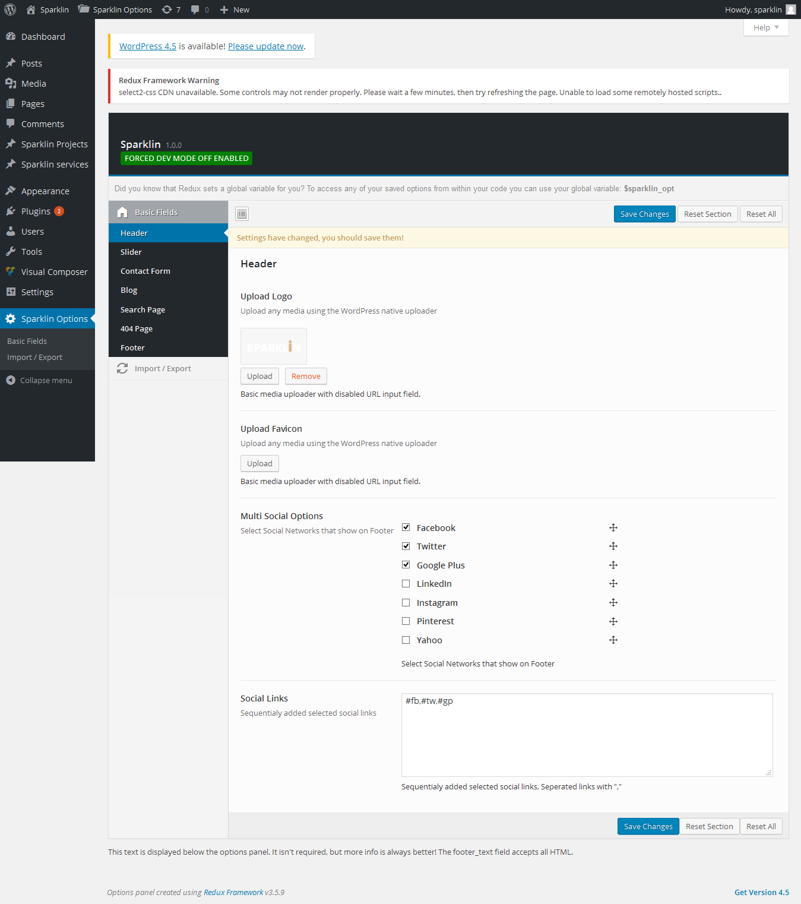
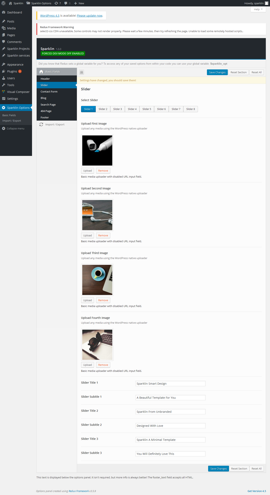
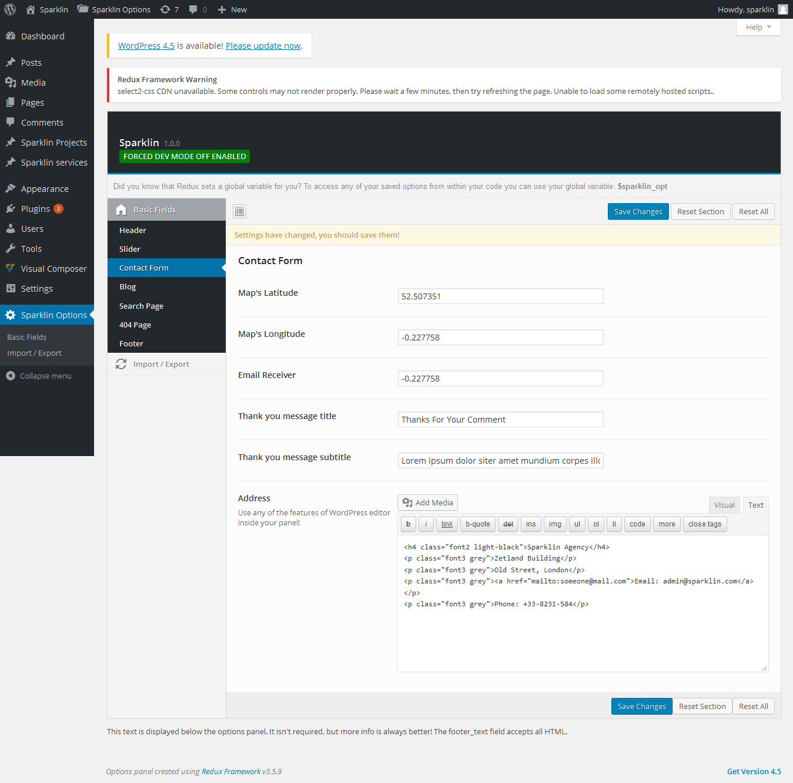
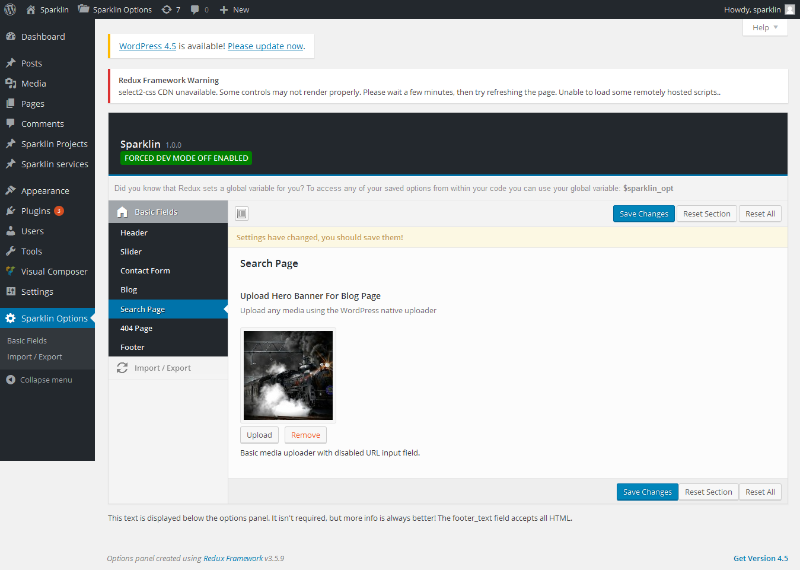
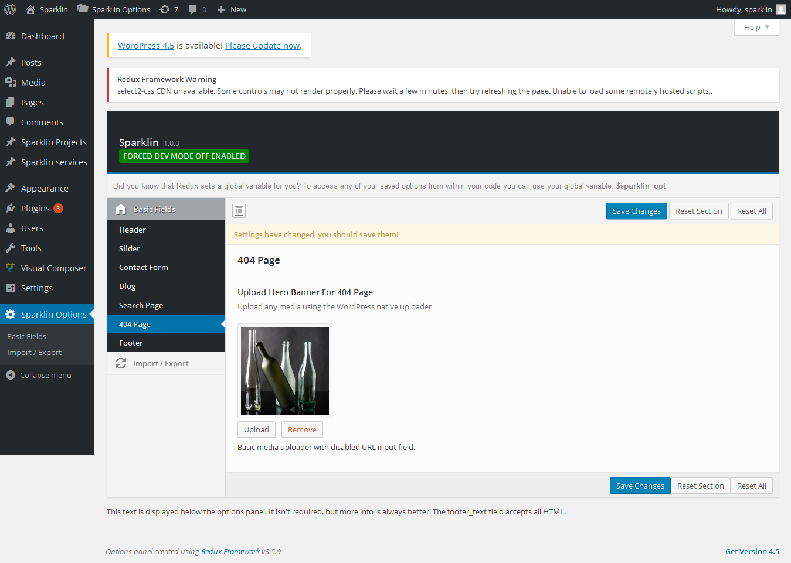
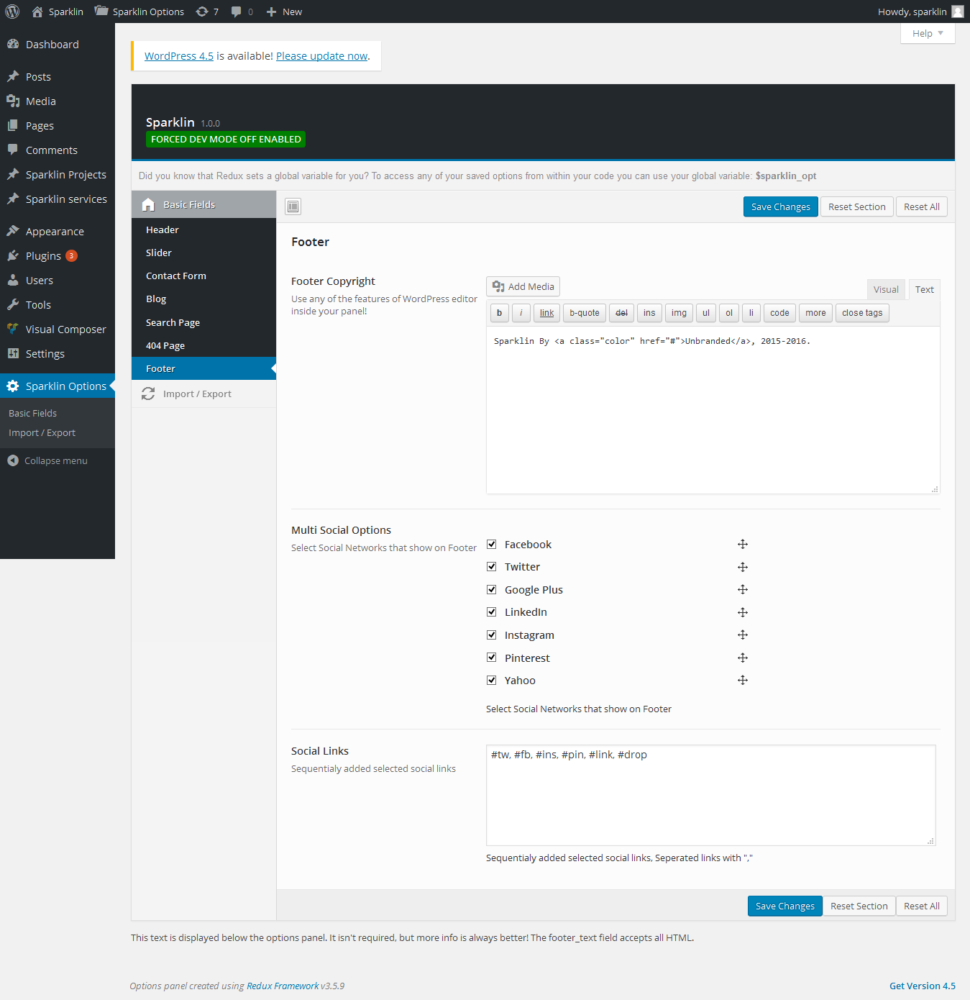

Theme Options
Wander comes with a theme options panel which allows you to easily customize your website, to access it go to Wander options and click Save All Changes to save changes.
-
Header
In Header tab, we can upload logo image, favicon icon, We recommend logo image in .PNG file format for logo image.
For the favicion, use an image in .ICO file format, the image size is 16x16 pixels.
Also you can hide or show topbar, search icon , cart icon from menu using this tab.

Slider
This section is for Creating Sliders. There are eight slider option. click any tab and set all image, text or video/audio id.

Contact Form
Map's attributes, Contact form's informations and official address should be included here.

Blog
Banner Image for blog page.
Search Page
Banner Image for Search page.

404 Page
Banner Image for 404 page.

Footer
